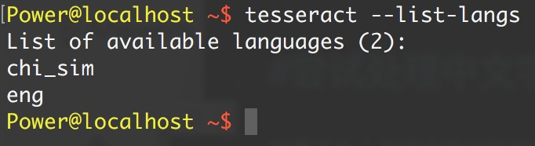
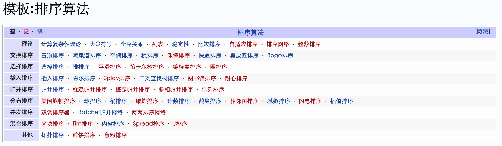
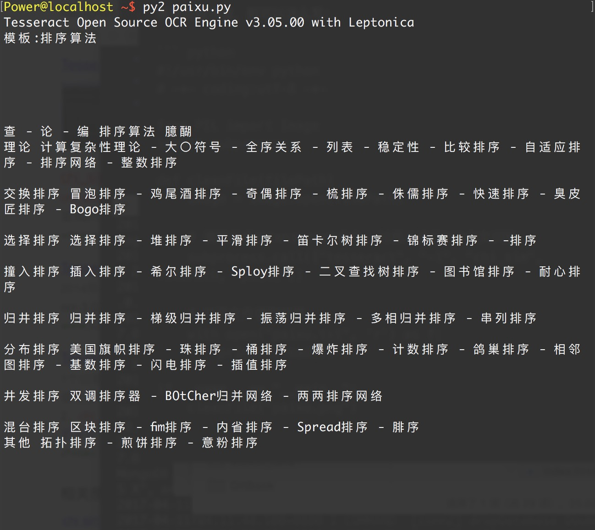

尝试对知乎网验证码进行处理：
许多流行的内容管理系统即使加了验证码模块，其众所周知的注册页面也经常会遭到网络 机器人的垃圾注册。
那么，这些网络机器人究，竟是怎么做的呢?既然我们已经，可以成功地识别出保存在电脑上 的验证码了，那么如何才能实现一个全能的网络机器人呢?
大多数网站生成的验证码图片都具有以下属性。
- 它们是服务器端的程序动态生成的图片。验证码图片的 src 属性可能和普通图片不太一 样，比如
<img src="WebForm.aspx?id=8AP85CQKE9TJ">，但是可以和其他图片一样进行 下载和处理。 - 图片的答案存储在服务器端的数据库里。
- 很多验证码都有时间限制，如果你太长时间没解决就会失效。
- 常用的处理方法就是，首先把验证码图片下载到硬盘里，清理干净，然后用 Tesseract 处理 图片，最后返回符合网站要求的识别结果。
#!/usr/bin/env python
# -*- coding:utf-8 -*-
import requests
import time
import pytesseract
from PIL import Image
from bs4 import BeautifulSoup
def captcha(data):
with open('captcha.jpg','wb') as fp:
fp.write(data)
time.sleep(1)
image = Image.open("captcha.jpg")
text = pytesseract.image_to_string(image)
print "机器识别后的验证码为：" + text
command = raw_input("请输入Y表示同意使用，按其他键自行重新输入：")
if (command == "Y" or command == "y"):
return text
else:
return raw_input('输入验证码：')
def zhihuLogin(username,password):
# 构建一个保存Cookie值的session对象
sessiona = requests.Session()
headers = {'User-Agent':'Mozilla/5.0 (Windows NT 10.0; Win64; x64; rv:47.0) Gecko/20100101 Firefox/47.0'}
# 先获取页面信息，找到需要POST的数据（并且已记录当前页面的Cookie）
html = sessiona.get('https://www.zhihu.com/#signin', headers=headers).content
# 找到 name 属性值为 _xsrf 的input标签，取出value里的值
_xsrf = BeautifulSoup(html ,'lxml').find('input', attrs={'name':'_xsrf'}).get('value')
# 取出验证码，r后面的值是Unix时间戳,time.time()
captcha_url = 'https://www.zhihu.com/captcha.gif?r=%d&type=login' % (time.time() * 1000)
response = sessiona.get(captcha_url, headers = headers)
data = {
"_xsrf":_xsrf,
"email":username,
"password":password,
"remember_me":True,
"captcha": captcha(response.content)
}
response = sessiona.post('https://www.zhihu.com/login/email', data = data, headers=headers)
print response.text
response = sessiona.get('https://www.zhihu.com/people/maozhaojun/activities', headers=headers)
print response.text
if __name__ == "__main__":
zhihuLogin('xxxx@qq.com','ALAxxxxIME')
尝试处理中文字符
如果手头上有中文的训练数据，也可以尝试对中文进行识别。
命令：tesseract --list-langs可以查看当前支持的语言，chi_sim表示支持简体中文。

那么在使用时候，可以指定某个语言来进行识别，如：
tesseract -l chi_sim paixu.png paixu

表现在程序里，则可以这么写：
#!/usr/bin/env python
# -*- coding:utf-8 -*-
from PIL import Image
import subprocess
def cleanFile(filePath)
image = Image.open(filePath)
# 调用系统的tesseract命令, 对图片进行OCR中文识别
subprocess.call(["tesseract", "-l", "chi_sim", filePath, "paixu"])
# 打开文件读取结果
with open("paixu.txt", 'r') as f:
print(f.read())
if __name__ == "__main__":
cleanFile("paixu.png")
结果如下：
